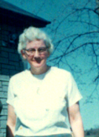
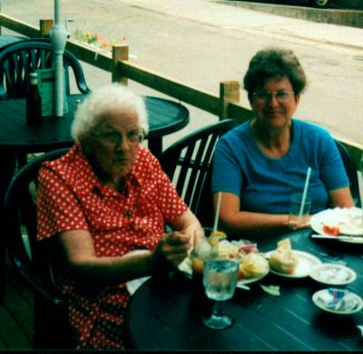

The Family Chronicle
No. 44 July 1, 2003
__________
Lillian Elspeth (Glendenning) Weeks (January 8, 1917 – October 23,2001)

Lillian taken in Hampton, Virginia
Lillian was born at 3 Perkins St., Fairhaven, Conn., USA, where Dad was working at the time. She would have traveled with the family to Hampton, Virginia and Muscle Shoals, Alabama before returning to Little Branch in 1919. She attended Little Branch School for a few years but admitted that she did not like school.
In school, students required a slate cloth and water to main clean slates. Once Lillian dropped her slate cloth and instead of picking it up, tied the ankle of the student in front of her to the leg of the desk. When the teacher called the girl to come to the board, the slate cloth tripped her.
Dad was returning from Moncton; Lillian was with him and maybe others. Near Rexton, a car tried to run him off the road. Lillian thought that they were rumrunners but perhaps the rum was inside them rather than just in the car. Dad pulled in to a store/gas station and phoned the RCMP. A car came from Newcastle. Lillian remembered riding in the police car as far as John W. MacNaughton's.
Lillian was a close friend of Maxine Macdonald and they used to visit back and forth. One of Mum’s tricks was to ask Lillian to take a note over to Maxine’s mother. She dutifully carried the noted a half-mile to Maxine’s place. She did not know it at the time, but the note simply said “Please send Lillian home after a while.”
At age 16, Lillian was glad to go to Boston to work. Ken remembers the phone call from her sister, Grace, who was living on Beacon Street at the time, saying that there was a job for her in Boston; Walter took Mum, Venetia and Lillian to catch the train at Newcastle. She arrived in Boston on September 22, 1933 and, I think, stayed with Dad’s cousin, Sam Knowles, for a while. The next night, she went to a dance with Grace and Roy to celebrate Grace’s 22nd birthday.
While in Boston, Lillian did housework and looked after children first for Mrs. Fineberg, who was a singer, and later for Mrs. Piser. Her last employer was Mrs. Walker where she worked for 5-6 years. One of her addresses was “61 Mayo Avenue, Needham.”
Brydone and Lillian met on April 18, 1933 while Lillian was visiting with Aunt Tine in Loggieville. There was a service in the United Church and afterward the young people played badminton. Brydone walked Lillian back to Aunt Tine’s. They courted for over 6 years. Lillian came home most summers but Brydone also visited her in Boston. In 1936, Brydone and Walter traveled to Boston by train stopping to visit in Portland on the way. Brydone and his mother drove Lillian back to Boston in 1936 after Grace’s wedding.
I can remember Brydone coming to court Lillian in his Dad’s car; I would hang around the front door and as they got into the car. Occasionally, Brydone would invite me to get in and go for a ride. Sometimes the ride would include a trip to the “Bayshore” and end with a cone of ice cream.
Lillian and Kenneth Brydone Weeks (July 6, 1917 – Sept 16, 1994) were married at Little Branch on December 22, 1939. by Rev. P. McK. Sampson, Minister of the Sunny Corner Presbyterian Church and they lived in Loggieville. Shortly after, Brydone enlisted in the North Shore Regiment. Lillian lived for a while in Woodstock, and Sussex as well as

Undated photo of Lillian
Camp Borden. She and the family lived in Loggieville (13 Church Lane?) while Brydone was overseas. Lillian and Brydone had three children, John Ellery, Kenneth Brydone and Patricia Jane.
Brydone was born in Loggieville and graduated from the Loggieville High School. For a number of years he worked for A&R Loggie Company delivering groceries and feed with one of his regular routes being Loggieville to Escuminac. People would phone in their orders and Brydone would deliver. Once or twice he took me with him and bought lunch while in Escuminac. It was quite a treat.
Brydone always wanted to farm and after leaving the army purchased a dairy farm near Harvey Station. Brydone was always active in his church and, in late 1964, Brydone accepted a call to minister in a three-point Presbyterian charge with a manse provided in Stanley. They lived there until retirement.
Lillian was a people person. She was active in her church. She enjoyed company, was a great conversationalist and enjoyed both hearing and telling jokes. Although she did not play any musical instrument she often sang while working around the house. She also sang in the choir and I can still hear her singing The Old Rugged Cross. Lillian, Brydone and daughter, Patricia, frequently led special church services with readings and song.
After Brydone retired, Lillian usually accompanied him when he substituted throughout Southern New Brunswick for ministers who were ill or on vacation. After Brydone died, Lillian moved to Harvey Station, then with Ken and Beverley but eventually moved into a senior’s home in MacAdam.
Their homes in Harvey Station and in Stanley were favourite stopping places when traveling through to Boston – as well as just for family visits. I frequently stayed there. In fact, at Easter of 1955, I was visiting when Mum phoned one night to say a letter had arrived saying that I had won a Beaverbrook Overseas Scholarship.
Lillian was a note-maker. She maintained a record of dates of events from her community and from Black River. In 1974-75, Lillian typed 144 pages of memories of her early years. In 1995, I arranged for them to be printed and she gave copies to family and a few close friends. Among other things, Lillian remembered visiting Bird Hill to observe the “Zepplin”, a German dirigible pass on its way to New York. That is the dirigible famous for having burst into flames while moored in New Jersey.

Lillian & Carol in Charlottetown - 1995
The Chronicle is an occasional newsletter published by Don Glendenning It is intended to solicit and provide information about family tree matters. Comments, enquiries and information may be sent to 62 Queen Elizabeth Drive, Charlottetown, PEI, C1A 3A9. Tel: 902-892-5859 Email: dglende @attglobal.net. Feel free to make and pass along copies of this newsletter.